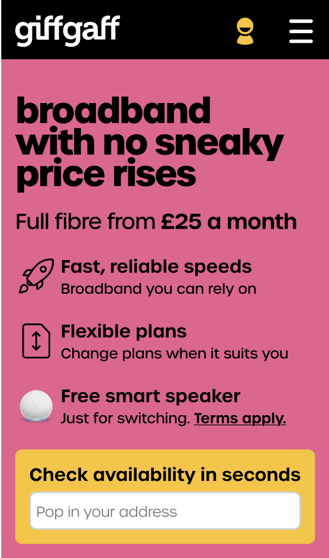
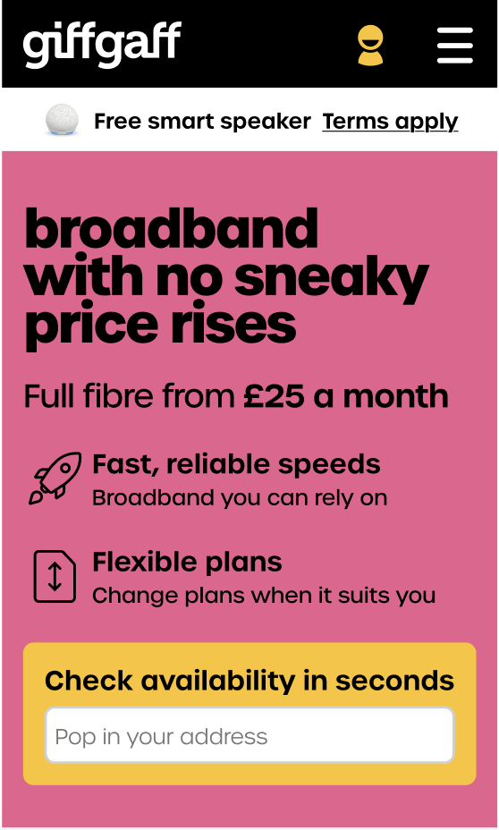
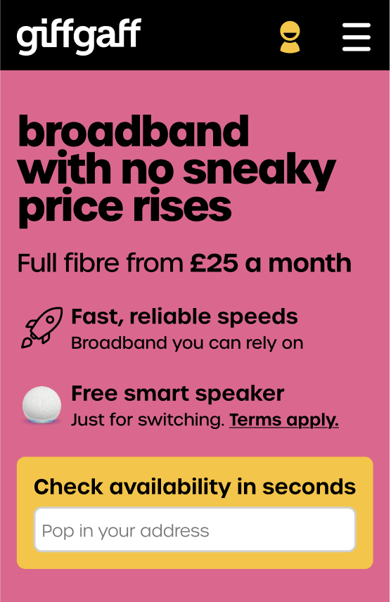
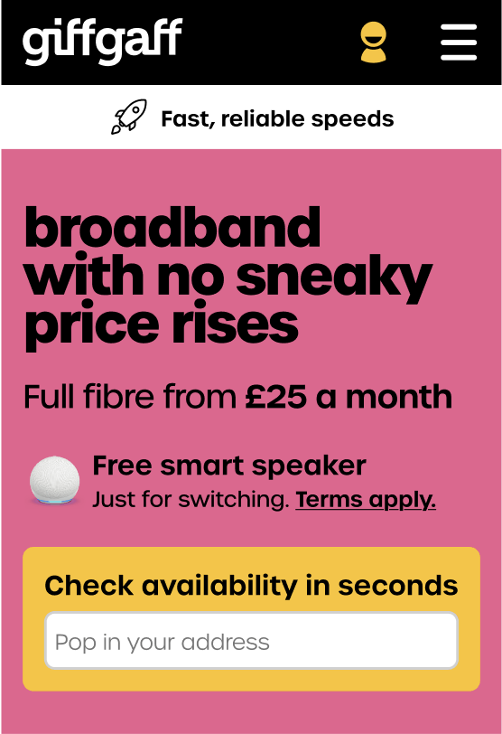
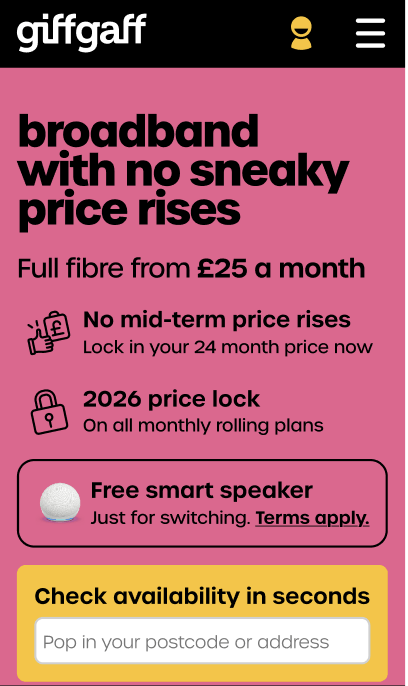
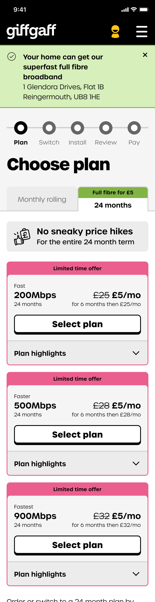
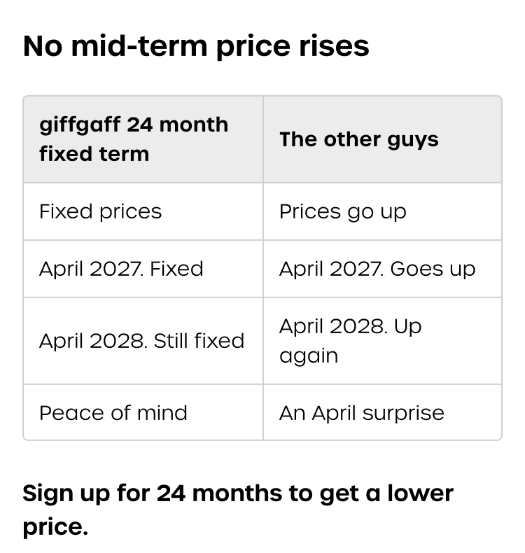

Case study 3 of 6 · Prices, plans and contracts
Plans and promotions: testing comprehension before anything ships
Prices, speeds and contract terms are where clarity is a legal duty as well as a design one. I built comprehension testing into how we write them, so the version that goes live is the one people understood, not the one the room liked.
- Role
- Content designer, planned and ran the testing myself
- With
- Product management, product design, trading, legal
- When
- Contract terms February 2026, promotions May to August 2026, plan pages September 2026
- Methods
- 5-second tests, comprehension questions, unmoderated Maze studies (n=10 to 80), A/B tests
- 83%vs33%comprehension for the best and worst of 5 promo headers7-second exposure, 30 people
- 100%picked the right fixed-term plan; 4 in 5 could say what they'd committed toFixed-term plan study, simplicity 4.5 out of 5
- <1 in 10read a "most loved" badge as a sign of popularity at a glance. The plan descriptions did the recommending instead.Recommended-plan study, 80 people across 2 stages
The problem with prices
A broadband price is never one number. There's the intro price, the price after 6 months, the difference between a rolling plan and a fixed term, and what "no mid-term price rises" does and doesn't cover. Every one of those is somewhere a person can misunderstand what they're agreeing to, and every one is covered by a regulation or a code.
So my rule for this area became: nothing goes live until we've watched people read it for 7 seconds and asked them what it said.
The promo header test
In May 2026 the trading team wanted a landing page header for an offer that bundled a price with a free smart speaker. There were 5 candidates. I set up a Maze study myself: 30 people, 5 to 7 per header, each shown one variant for 7 seconds, then asked to explain what the screen was about, then shown it again with no time limit and asked what they'd get for free.
The best header got the free item across to 83% of people. The weakest managed 33%. The one that worked was the plainest: 3 benefits under the price, the free item last and in the same weight as the others. The one that failed had the most going on, with 2 extra price-lock messages and the speaker in its own box.
A, 83%

B, 67%

C, 60%

D, 71%

E, 33%

The 5 headers and the share of people who could say what the free item was after a 7-second look, then a second look with no time limit.
An earlier round had already shown me why this matters. The variant most people in the office liked scored 40% on comprehension. Its runner-up scored 80%. Since then the question in review has been "what did people say it meant", not "which one do you prefer".
Contract terms people can repeat back
giffgaff's mobile plans have never had a contract. When fixed-term broadband plans arrived in 2026 I wrote the content strategy for how we'd talk about them: lead with the thing people gain (a price that doesn't move for the term), say "minimum term" and "early termination charges" in those words rather than softer ones, and make the trade-off explicit so nobody finds it in the small print.
I wrote the contract summary and contract information documents with legal too. Where legal and I disagree, I look for the middle ground: rather than asterisks and small print, the key facts go into the main text. Or I find another organisation already doing what I'm proposing, and that precedent usually settles it.
In testing, everyone who was asked to pick the fixed-term plan picked it, and 80% could say afterwards what length of commitment they'd made. Simplicity scored 4.5 out of 5. The gap was the benefit: only 40% noticed the price lock without being prompted. That gap is why the price promise later became the landing page's headline message rather than a line in the plan details.
"The prices and plans were very transparent without hiding any price hikes like others do."
Participant, plan page study, September 2026
Choose plan

Further down the same page

Descriptions beat badges
Each plan has a short description of who it suits, written so a household can find itself in one: how many people it's good for and what they do online. In September 2026 the team tested whether adding a "most loved" badge to the middle plan would steer people's choice.
At a glance, only 2 or 3 people out of 36 read the badge as a sign of popularity. The rest guessed "limited offer", "on sale" or "cheaper". With promo pricing on the page, trust across every version fell from 3.2 to 2.7 out of 5, and the badge did nothing to bring it back. In the interactive round, the descriptions were the most common reason people gave for their choice. So the recommendation went back to the team: let the descriptions do the recommending.
"The description of the plan helped a lot. It was clear the 200 wasn't going to be enough and 900 wasn't really going to be worth the extra."
Participant, recommended-plan study, September 2026
"I originally went for the higher option but lowered it when I spotted how many people the second option was suitable for."
Participant, recommended-plan study, September 2026
Small words on live traffic
Not every result is dramatic. For a test on the member dashboard's broadband tab, I wrote the copy options with the product manager: a benefit-led heading and subtext against the price-led original. The benefit-led version got more people checking their address and looking at broadband, but didn't change how many went on to order. The team's read was that messaging moves intent, and what happens after the address check decides the purchase. Useful to know where a heading's limits are.
Other changes were smaller still and mostly about not overclaiming. "Term length" rather than "contract" on the order review. A promo line that says "for your first 6 months of a 24 month plan". Not calling a 200Mbps plan "ultra fast", because Ofcom reserves that for 300Mbps and up.
7 seconds is how long you get. Test at 7 seconds.